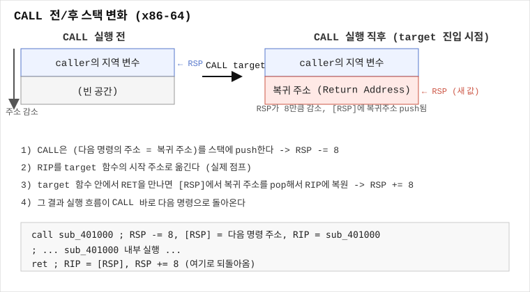

CALL: 함수 호출, 반환 주소, 인자 추적
한 줄 요약
CALL은 "다음 실행할 주소(반환 주소)를 스택에 PUSH한 뒤, 목표 함수로 점프하는" 명령어다. 이 반환 주소 덕분에 함수가 끝나면(RET) 원래 자리로 돌아올 수 있다.
언제 검색해야 하나
- 어셈블리에
call sub_401230,call rax,call qword ptr [rax+8]같은 코드가 나오는데 각각 무슨 차이인지 모를 때 - 함수 호출 직전에 어떤 레지스터를 보면 인자를 알 수 있는지 모를 때 (
rdi rsi 인자,rcx rdx 인자) - IDA에서 Step Into(F7)와 Step Over(F8)의 차이가 헷갈릴 때
- CALL 대상이 IAT(Import Address Table)를 가리켜서 실제로 무슨 함수를 부르는지 알기 어려울 때
- "함수가 어디서 호출되는지 모르겠음"처럼 xref를 찾아야 하는 상황
핵심 개념
CALL이 실제로 하는 일
CALL target은 다음 두 단계를 원자적으로 수행한다:
- 현재 RIP(다음 실행할 명령의 주소, 즉 CALL 바로 다음 명령의 주소)를 스택에 PUSH한다. 이것이 "반환 주소(return address)"다. x64에서는 RSP가 8만큼 감소하고, x86에서는 ESP가 4만큼 감소한다.
- RIP를 target 주소로 설정한다. 즉 그 함수의 첫 명령으로 실행 흐름이 넘어간다.
RET(함수가 끝날 때 실행하는 명령)는 정확히 반대로, 스택 맨 위에서 반환 주소를 POP해서 RIP에 넣는다. CALL과 RET는 항상 쌍으로 동작하는 짝이라고 생각하면 된다.

JMP와의 차이: JMP는 그냥 RIP만 바꾸고 스택에 아무것도 남기지 않는다. 그래서 JMP한 곳에서는 "돌아올 방법"이 없다(꼬리 호출/tail call 최적화에서 컴파일러가 CALL 대신 JMP를 쓰는 경우가 있는데, 이는 "돌아올 필요가 없는 마지막 호출"이기 때문이다).
Direct Call vs Indirect Call
- Direct call:
call sub_401230처럼 목표 주소가 명령어 자체에 고정된 상수(오퍼랜드가 상대 오프셋 rel32)로 박혀 있다. IDA에서는 함수 이름/주소로 바로 표시된다. 어떤 함수를 부르는지 정적으로 100% 확정된다. - Indirect call: 목표 주소가 레지스터나 메모리에서 읽어와서 결정된다.
call rax— RAX 레지스터에 들어있는 값을 목표 주소로 사용. 이 값은 실행 시점에 달라질 수 있다(함수 포인터, 가상 함수 테이블, IAT를 통한 임포트 호출 등).call qword ptr [rax]— RAX가 가리키는 메모리 위치에서 8바이트(64비트) 값을 읽어 그걸 목표 주소로 사용. C++ 가상 함수 호출(vtable), 함수 포인터 배열, 임포트된 함수 호출(IAT를 거치는 경우)에서 흔히 보인다.call [rip+0x2f10]— RIP 기준 상대 주소의 메모리 값을 읽어 호출. Windows PE에서 임포트 함수를 부를 때 컴파일러가 자주 생성하는 패턴(IAT를 통한 호출)이다.
분석 난이도 차이: Direct call은 정적 분석만으로 목표를 바로 알 수 있지만, Indirect call은 그 레지스터/메모리에 어떤 값이 들어가는지 역추적하거나(정적) 실제로 실행해서 확인해야(동적) 목표를 알 수 있다. vtable을 통한 C++ 가상 함수 호출이 indirect call로 보이는 대표적인 이유이기도 하다.
스택과 RSP 변화
x64 기준:
CALL 실행 전: RSP = 0x7ffee000
CALL 실행: [RSP-8] = 반환주소, RSP = 0x7ffedff8 (8바이트 감소)
함수 진입 후 (전형적 프롤로그):
push rbp ; RSP -= 8 (이제 이전 RBP 저장)
mov rbp, rsp
sub rsp, 0x20 ; 지역 변수 공간 확보
...
함수 종료 (전형적 에필로그):
leave ; RSP = RBP, 그리고 POP RBP (RSP += 8)
ret ; 반환 주소를 POP → RIP에 로드 (RSP += 8), 그 주소로 점프RET 이후 RSP는 CALL 실행 직전 값으로 정확히 되돌아온다. 이 균형이 깨지면(스택 불균형) IDA가 "positive sp value has been detected" 같은 경고를 낸다 (REV-0151 참고).
호출 규약(Calling Convention)과 인자 위치
함수를 호출하기 직전에 인자들이 특정 레지스터/스택에 세팅된다. 어느 레지스터를 쓰는지는 플랫폼과 ABI에 따라 다르다.
SysV AMD64 (Linux/macOS x64) — 정수/포인터 인자는 순서대로:
1번째: RDI
2번째: RSI
3번째: RDX
4번째: RCX
5번째: R8
6번째: R9
7번째 이후: 스택에 push (오른쪽에서 왼쪽 순서로)예: strcmp(a, b) 호출 직전이라면 RDI = a의 주소, RSI = b의 주소로 세팅된 상태에서 call strcmp가 실행된다.
Microsoft x64 (Windows x64) — 정수/포인터 인자는 순서대로:
1번째: RCX
2번째: RDX
3번째: R8
4번째: R9
5번째 이후: 스택 (그리고 처음 4개 인자용으로도 "shadow space" 32바이트를 호출자가 예약해야 함)예: CreateFileW(...) 호출 직전이라면 RCX에 첫 번째 인자(파일 경로 포인터)가 들어있다.
어떻게 구분하나: 바이너리가 PE(Windows)면 Microsoft x64, ELF(Linux)면 SysV AMD64를 기본으로 가정한다. IDA는 플랫폼을 인식해서 디컴파일 결과에 인자를 알아서 나눠 보여주지만, 디스어셈블리(어셈블리 원문)를 직접 읽을 때는 이 레지스터 순서를 외워두는 게 훨씬 빠르다.
CALL 직전 인자를 눈으로 확인하는 법
CALL 명령어 바로 위쪽 몇 줄을 거슬러 올라가며, 위에서 설명한 순서의 레지스터에 값이 들어가는 지점을 찾는다.
; SysV x64 예시
lea rdi, [rbp-0x20] ; 1번째 인자 (버퍼 주소)
mov esi, 0x40 ; 2번째 인자 (크기 64)
call read ; ssize_t read(int fd, void *buf, size_t count) 형태라면 fd가 먼저 와야 하므로
; 실제로는 더 위에 mov edi, fd 가 있을 것컴파일러는 최적화 때문에 레지스터 세팅 순서가 항상 코드 순서와 일치하지는 않는다 — 하지만 CALL 직전, "어떤 레지스터에 마지막으로 쓰여진 값" 을 각 레지스터별로 확인하면 인자를 알아낼 수 있다.
반환값
함수가 끝나고 값을 돌려줄 때는:
- 32비트 정수 반환값 → EAX
- 64비트 정수/포인터 반환값 → RAX
- 실수(float/double) 반환값 → XMM0
CALL 명령 바로 다음 줄에서 EAX/RAX를 어떻게 쓰는지 보면 그 함수가 무엇을 반환했고 그 값으로 무엇을 하는지(비교, 저장 등) 바로 알 수 있다.
임포트 함수 호출 (Imports)
프로그램이 자기 코드에 없는 라이브러리 함수(printf, CreateFileW, malloc 등)를 부를 때는 보통 간접 호출을 거친다:
- Windows PE:
call cs:__imp_CreateFileW형태로 보이며, 이는 IAT(Import Address Table)의 한 슬롯을 가리키는 간접 호출이다. 실제 주소는 로더가 프로그램 시작 시 채워 넣는다. - Linux ELF (동적 링킹):
call printf처럼 direct call로 보이지만 실제로는 PLT(Procedure Linkage Table) 스텁을 호출하는 것이고, PLT 안에서 GOT(Global Offset Table)를 거쳐 실제 libc 함수로 다시 점프한다. 자세한 내용은 REV-0100(PLT와 GOT 기초) 참고.
IDA는 이런 호출 대상에 자동으로 CreateFileW, printf 같은 익숙한 이름을 붙여주므로, Imports 탭이나 함수 이름만 봐도 어떤 API를 쓰는지 짐작할 수 있다 — 이것이 REV-0001 트리아지에서 "임포트 목록부터 본다"고 강조하는 이유다.
Nested Call과 Call Graph
함수 A가 함수 B를 부르고, B가 다시 함수 C를 부르는 것을 중첩 호출(nested call) 이라 한다. 스택에는 반환 주소가 계속 쌓인다(A→B로 갈 때 A로 돌아갈 주소, B→C로 갈 때 B로 돌아갈 주소). 이 중첩 관계 전체를 시각화한 것이 Call Graph(호출 그래프) 다.
IDA에서 함수를 선택하고 우클릭 → "View call graph from"을 쓰면, 이 함수가 무엇을 호출하는지 트리 형태로 볼 수 있다. 복잡한 바이너리에서 "핵심 검증 로직이 어디 있는지" 찾을 때, 문자열을 참조하는 함수부터 시작해서 call graph를 위/아래로 훑으면 빠르게 구조를 파악할 수 있다 (REV-0166 참고).
CALL Xref (이 함수가 어디서 불리는지)
반대로 "이 함수를 누가 호출하는가"를 알고 싶다면, IDA에서 함수 이름 위에 커서를 놓고 X 키(Xrefs to)를 누른다. 이 함수를 호출하는 모든 CALL 위치 목록이 뜬다. 더블클릭하면 그 호출 지점으로 바로 이동한다. 이건 "함수가 어디서 호출되는지 모르겠음" 문제를 푸는 표준 방법이다.
Step Into vs Step Over
디버거(IDA 디버거, x64dbg, GDB 공통 개념)로 실행 중 CALL을 만났을 때:
- Step Into (IDA F7): CALL이 가리키는 함수 내부로 들어가서 한 줄씩 실행한다. 그 함수의 동작이 궁금할 때 사용.
- Step Over (IDA F8): CALL을 함수 전체를 한 번에 실행하고, 반환된 직후(CALL 다음 줄)에서 멈춘다. 이미 아는 라이브러리 함수(
printf등)라서 내부를 볼 필요가 없을 때 사용 — 매번 Step Into 했다가 라이브러리 코드 수백 줄을 헤매는 실수를 피할 수 있다.
x64dbg는 동일하게 F7(Step Into)/F8(Step Over)를 쓰고, GDB/Pwndbg는 stepi(step into 1개 명령어) / nexti(step over 1개 명령어) 또는 소스 레벨의 step/next를 사용한다.
화면/코드에서 보이는 징후
call sub_401230— direct call, 정적으로 대상 확정call rax,call rbx— 레지스터 기반 indirect call, 함수 포인터/가상 함수 의심call qword ptr [rax+10h]— 메모리(포인터 배열, vtable) 기반 indirect callcall cs:__imp_CreateFileW— Windows 임포트 함수 호출 (IAT 경유)call printf(ELF, 실제로는 PLT 스텁) — Linux 임포트 함수 호출- CALL 직후
test eax, eax또는cmp eax, ...— 반환값을 바로 검사하는 매우 흔한 패턴
가장 먼저 할 것
CALL을 만나면 순서대로 확인한다:
- Direct인가 Indirect인가 (오퍼랜드가 주소 리터럴인지, 레지스터/메모리인지)
- IDA가 이름을 붙여줬는가 (라이브러리/임포트 함수인지 사용자 코드인지)
- CALL 직전 인자 레지스터(RDI/RSI/RDX/RCX/R8/R9 또는 RCX/RDX/R8/R9)에 어떤 값이 세팅됐는지
- CALL 직후 RAX/EAX를 어떻게 쓰는지 (반환값 활용)
단계별 절차
1) Direct call 분석
call sub_401450IDA에서 sub_401450을 더블클릭 → 함수 내부로 진입. F5로 디컴파일해서 어떤 로직인지 확인. 처음 보는 사용자 함수라면 이름을 붙여둔다(N 키).
2) Indirect call 분석 (레지스터)
mov rax, [rbp-8] ; 함수 포인터 로드
call raxrax에 어떤 값이 들어가는지 위로 거슬러 올라간다. 정적으로 특정이 안 되면(예: 사용자 입력에 따라 달라짐) 디버거로 실행 중 해당 지점에서 레지스터 값을 직접 확인한다(IDA 디버거 F2로 브레이크포인트 설정 → F9 실행 → 레지스터 창에서 RAX 값 확인).
3) 인자 확인 (SysV 예시)
lea rdi, [rbp-0x30] ; 1번째 인자
mov esi, 0x14 ; 2번째 인자 (20)
xor edx, edx ; 3번째 인자 (0)
call some_func→ some_func(buf, 20, 0) 형태로 호출된다고 해석.
4) 반환값 추적
call strlen
cmp eax, 10
jg too_long→ strlen()의 반환값(길이)을 EAX에서 받아 10과 비교 후 분기.
5) 임포트 함수 여부 확인
IDA에서 함수 이름이 이탤릭체거나 파란 글씨로 다르게 표시되면 임포트/라이브러리 함수인 경우가 많다. Imports 탭(View → Open subviews → Imports)에서 전체 목록을 미리 훑어두면 CALL 대상 이름만 봐도 바로 API 문서를 검색할 수 있다.
6) Xref로 호출자 찾기
함수 이름 위에서 X → 이 함수를 부르는 모든 위치 목록 확인 → 더블클릭으로 이동.
7) 디버거로 실제 인자/반환값 확인 (동적 분석)
정적 분석만으로 값이 애매하면(레지스터 세팅이 복잡한 계산 결과인 경우), CALL 명령 주소에 브레이크포인트를 걸고(IDA F2 또는 x64dbg에서 주소 우클릭 → Breakpoint) 실행을 멈춘 뒤 레지스터 창에서 실제 값을 확인한다. RET 직후에 브레이크포인트를 걸면 RAX의 실제 반환값도 확인 가능하다.
명령어/단축키
- IDA:
X(Xrefs to — 누가 이 함수를 호출하는가),N(이름 바꾸기),F5(디컴파일),F7(Step Into),F8(Step Over),F2(브레이크포인트),F9(실행/계속), Functions 창에서 우클릭 → "View call graph from ..." - x64dbg:
F7(Step Into),F8(Step Over), CALL 대상 라인 우클릭 → "Follow in Disassembler"로 대상 함수로 이동 - GDB/Pwndbg:
stepi(si, 명령어 단위 step into),nexti(ni, 명령어 단위 step over),finish(현재 함수가 끝날 때까지 실행 후 반환값 표시),bt(backtrace, 반환 주소 스택 확인)
출력 해석
- IDA 디컴파일에서
func(a1, a2, a3)형태로 인자가 자동 정리되어 나오면, 이는 CALL 직전 레지스터 세팅을 IDA가 호출 규약에 맞춰 해석해준 결과다. call ds:GetProcAddress처럼ds:,cs:접두사가 붙으면 메모리(데이터 세그먼트)를 통한 간접 호출이라는 뜻 — 대부분 임포트 테이블 경유.- GDB에서
finish실행 후Value returned is $1 = 0x2a처럼 나오면 이것이 함수의 반환값(RAX)이다.
흔한 실수
- Indirect call(
call rax)을 보고 "분석 불가능"이라 포기하는 것 — 디버거로 실제 실행 시 레지스터 값을 보면 대부분 특정 가능하다. - 인자 레지스터 순서를 플랫폼과 무관하게 항상 같다고 착각하는 것 — Windows x64(RCX,RDX,R8,R9)와 Linux SysV x64(RDI,RSI,RDX,RCX,R8,R9)는 순서와 개수 배치가 다르다. 특히 3번째부터는 이름이 겹치는 레지스터(RDX,RCX)라도 순서상 위치가 다르다는 점에 주의.
- Step Into(F7)를 라이브러리 함수(
printf등)에도 계속 눌러서 관계없는 코드 속에서 길을 잃는 것 — 이미 아는 함수는 Step Over(F8)로 건너뛴다. - CALL과 JMP를 같은 것으로 착각하는 것 — JMP는 반환 주소를 남기지 않는다. Tail call 최적화로 JMP가 함수 호출처럼 쓰인 코드를 보면 헷갈릴 수 있으니, 함수 맨 끝(에필로그 자리)에서의 JMP는 "마지막 호출 후 그대로 반환까지 위임"하는 패턴임을 기억한다.
막혔을 때 다음 체크
- CALL 대상이 계속 레지스터/메모리라서 정적으로 특정이 안 된다면 → 디버거로 브레이크포인트 걸고 동적으로 확인 (REV-0169, REV-0175 참고 예정).
- 함수가 어디서 호출되는지 계속 못 찾겠다면 → X(Xrefs to)를 제대로 누르고 있는지, 커서가 함수 이름/시작 주소 위에 정확히 있는지 확인.
- 인자를 다 세팅했는데도 결과가 이해 안 되면 → 호출 규약을 잘못 짚었을 가능성(SysV vs Windows x64를 혼동)을 의심.
- 반환값(RAX)이 다음 코드에서 안 쓰이는 것 같다면 → 반환값을 버리는 함수(
void처럼 취급)일 수 있으니 함수 원형을 다시 확인.
미니 예제
예제 1 — Direct call + SysV 인자 + 반환값
// 원본 C 코드
int len = strlen(input);
if (len != 10) fail();lea rdi, [rbp-0x40] ; input 주소 -> 1번째 인자 (RDI)
call strlen
cmp eax, 0Ah ; 반환값(EAX)을 10과 비교
jnz fail예제 2 — Windows x64 API 호출 (간접, IAT 경유)
lea rcx, [rip+FileName] ; 1번째 인자 (RCX) - Windows x64 규약
mov edx, 80000000h ; 2번째 인자 (RDX) - GENERIC_READ
mov r8d, 1 ; 3번째 인자 (R8) - FILE_SHARE_READ
...
call cs:__imp_CreateFileW ; IAT를 통한 간접 호출예제 3 — Nested call (함수가 함수를 호출)
sub_401000:
call sub_402000 ; A가 B를 호출 (반환 주소 R1을 스택에 push)
ret
sub_402000:
call sub_403000 ; B가 C를 호출 (반환 주소 R2를 스택에 push)
ret ; C가 끝나면 R2로 복귀 (B로 돌아옴), 그 다음 이 ret으로 R1로 복귀 (A로 돌아옴)이 예제에서 CALL이 실행될 때마다 스택에 반환 주소가 하나씩 쌓이고(push), RET이 실행될 때마다 하나씩 빠진다(pop) — 정확히 짝이 맞아야 프로그램이 정상 종료된다.
관련 글
- REV-0072 — RET: 함수 반환과 스택 변화
- REV-0106 — SysV AMD64 Calling Convention
- REV-0122 — Microsoft x64 Calling Convention
- REV-0100 — PLT와 GOT 기초
- REV-0151 — IDA Positive SP Value Has Been Detected 경고
- REV-0170 — Step Into와 Step Over 차이
- REV-0175 — CALL 직전 함수 인자 확인하는 법
- REV-0176 — CALL 직후 반환값 확인하는 법
출처/검증
- CALL/RET 명령어 동작: Intel 64 and IA-32 Architectures Software Developer's Manual, Volume 2A, "CALL—Call Procedure" / "RET—Return from Procedure" 섹션 기준 (2026-09-08 검증).
- SysV AMD64 인자 레지스터 순서(RDI,RSI,RDX,RCX,R8,R9): System V Application Binary Interface AMD64 Architecture Processor Supplement 공식 스펙 기준.
- Microsoft x64 인자 레지스터 순서(RCX,RDX,R8,R9)와 shadow space: Microsoft Learn "x64 calling convention" 공식 문서 기준.
- IDA 단축키(F5/F7/F8/F2/F9/X/N): Hex-Rays 공식 IDA 문서(Hotkeys, Cross-references) 기준.